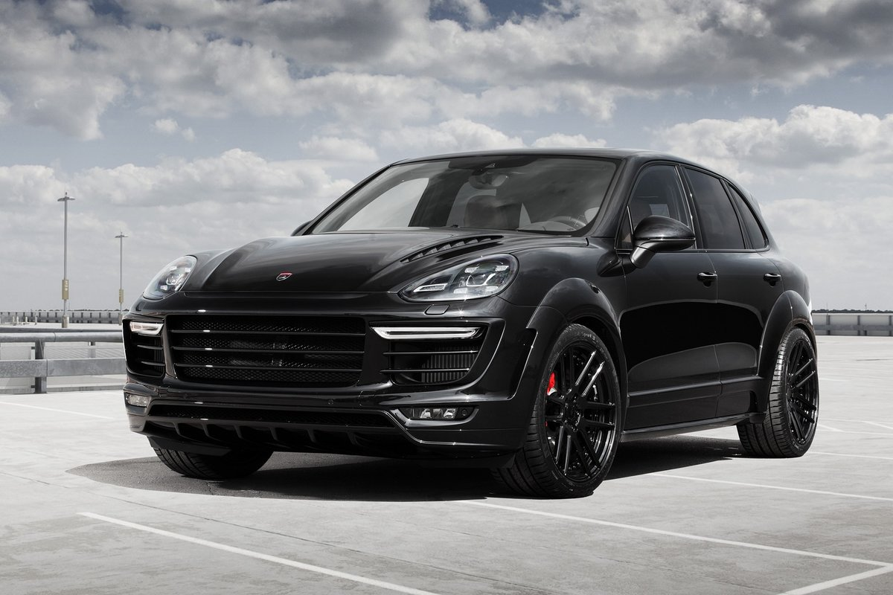

Porsche Cayenne |
|
|---|---|

more images |
Porsche Cayenne Diesel
Prices for diesel "Cayenne" start with 4 898 000 rubles-so much is a car equipped with a turbo diesel V6 3.0 capacity of 245 HP
Porsche Cayenne S Diesel
Another diesel variant, under the hood, which is a 4.1 V8 engine with a capacity of 385 forces, is estimated at 6 435 000.
Porsche Cayenne GTS
The version of the Porsche Cayenne GTS is 3.6 motor, uprated to 440 forces, and lowered suspension. Price - from 7 025 000 rubles. Porsche Cayenne S E-Hybrid The hybrid crossover is equipped with a V6 3.0 gasoline engine with a mechanical supercharger, a 70-horsepower electric motor and lithium-ion batteries with a capacity of 10.8 kW·h (they can be recharged from the household network). The total capacity of the power plant is 416 HP Price - from 6 341 000 rubles. |
BMW X5 |
|
|---|---|
|
The BMW X5 is a mid — size crossover SUV from the German automaker BMW. The car was presented in 1999 at the Detroit auto show. The letter " X "means that the car has all — wheel drive, and the number" 5 " -that the base was the 5th series (BMW E39), but X5 shorter than E39, but higher and wider. The body reminds E53 BMW E46 Touring. The machine is adapted for driving on all types of road surface, it is obliged to a large clearance and constant drive on all wheels. BMW X5 E53 was developed at a time when the BMW Group already owned the Land Rover brand and as such it has many common components and design with the Range Rover L322, particularly the Hill Descent system and Off Road, as well as the engine and electronic systems from the BMW E39. Unlike the Range Rover, the first X5 was designed as a sports car, and its off-road capabilities are significantly less than Land Rover |
|